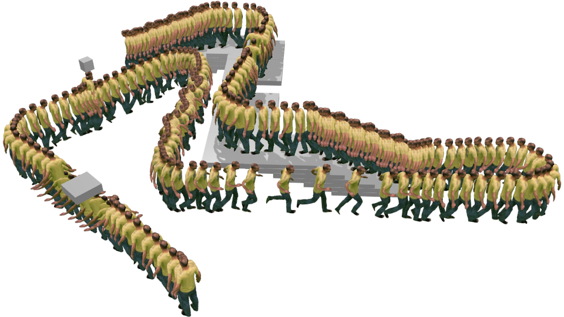

Adnane Boukhayma
Reseach, Datasets, Teaching
adnane.boukhayma(at)inria.fr
I am a tenured research scientist (chargé de recherche) at Inria Rennes. Previously I was a postdoc at the University of Oxford. I completed my PhD before that at Inria Grenoble.


Research
ProKeR: A Kernel Perspective on Few-Shot Adaptation of Large Vision-Language Models
Y. Bendou, A. Ouasfi, V. Gripon, A. Boukhayma
CVPR 2025
Project |
PDF |
Code
Toward Robust Neural Reconstruction from Sparse Point Sets
A. Ouasfi, S. Jena, E. Marchand A. Boukhayma
ECCV 2024
Project |
PDF |
Code
SPARK: Self-supervised Personalized Real-time Monocular Face Capture
K. Baert, S. Bharadwaj, F. Castan, B. Maujean, M. Christie, V. Abrevaya, A. Boukhayma
SIGGRAPH Asia 2024
Project |
PDF |
Code |
Data
SparseCraft: Few-Shot Neural Reconstruction through Stereopsis Guided Geometric Linearization
M. Younes, A. Ouasfi, A. Boukhayma
ECCV 2024
Project |
PDF |
Code |
Data
Few-Shot Unsupervised Implicit Neural Shape Representation Learning with Spatial Adversaries
A. Ouasfi, A. Boukhayma
ICML 2024
PDF |
Code
Unsupervised Occupancy Learning from Sparse Point Cloud
A. Ouasfi, A. Boukhayma
CVPR 2024 (Highlight)
PDF |
Code
GeoTransfer: Generalizable Few-Shot Multi-View Reconstruction via Transfer Learning
S. Jena, F. Multon, A. Boukhayma
ECCV Workshop 2024
Project |
PDF |
Code
Robustifying Generalizable Implicit Shape Networks with a Tunable Non-Parametric Model
A. Ouasfi, A. Boukhayma
NeurIPS 2023
PDF |
Code
Mixing-Denoising Generalizable Occupancy Networks
A. Ouasfi, A. Boukhayma
3DV 2024
PDF |
Code
Few-Shot Multi-Human Neural Rendering Using Geometry Constraints
Q. Li, V. Abrevaya, F. Multon, A. Boukhayma
arXiv 2023
PDF |
Code
Contact-conditioned hand-held object reconstruction from single-view images
X. Wang, Y. Li, A. Boukhayma, C. Wang, M. Christie
C&G 2023
PDF
Learning Generalizable Light Field Networks from Few Images
Q. Li, F. Multon, A. Boukhayma
ICASSP 2023
PDF |
Code

Few ‘Zero Level Set’-Shot Learning of Shape Signed Distance Functions in Feature Space
A. Ouasfi, A. Boukhayma
ECCV 2022
PDF |
Code
Neural Mesh-Based Graphics
S. Jena, F. Multon, A. Boukhayma
ECCV Workshop 2022
PDF |
Code
3D Human Shape and Pose from a Single Depth Image with Deep Dense Correspondence Enabled Model Fitting
X. Wang, A. Boukhayma, S. Prevost, E. Desjardin, C. Loscos, F. Multon
EG Poster 2022
PDF
Dual Mesh Convolutional Networks for Human Shape Correspondence
N. Verma, A. Boukhayma, J. Verbeek, E. Boyer
3DV 2021 (Oral)
PDF
Neural Human Deformation Transfer
J. Basset, A. Boukhayma, S. Wuhrer, F. Multon, E. Boyer
3DV 2021
PDF
Monocular Human Shape and Pose with Dense Mesh-borne Local Image Features
S. Jena, F. Multon, A. Boukhayma
FG 2021
PDF |
Code
Cross-modal Deep Face Normals with Deactivable Skip Connections
V. Abrevaya*, A. Boukhayma*, P. Torr, E. Boyer (*equal contrib.)
CVPR 2020 (Oral)
PDF |
Code
DGPose: Deep Generative Models for Human Body Analysis
R. de Bem, A. Ghosh, T. Ajanthan, O. Miksik, A. Boukhayma, N. Siddharth, P. Torr
IJCV 2020
PDF
A Decoupled 3D Facial Shape Model by Adversarial Training
V. Abrevaya, A. Boukhayma, S. Wuhrer, E. Boyer
ICCV 2019 (Oral)
PDF
3D Hand Shape and Pose from Images in the Wild
A. Boukhayma, R. de Bem, P. Torr
CVPR 2019 (Oral)
PDF |
Code
A Conditional Deep Generative Model of People in Natural Images
R. de Bem, A. Ghosh, A. Boukhayma, T. Ajanthan, N. Siddharth, P. Torr
WACV 2019
PDF
Domain Partitioning Network
B. Csaba, A. Boukhayma, V. Kulharia, A. Horváth, P. Torr
arXiv 2019
PDF
Surface Motion Capture Animation Synthesis
A. Boukhayma, E. Boyer
TVCG 2018
PDF
Surface Motion Capture Transfer with Gaussian Process Regression
A. Boukhayma, J. Franco, E. Boyer
CVPR 2017
PDF
Controllable Variation Synthesis for Surface Motion Capture
A. Boukhayma, E. Boyer
3DV 2017
PDF
Eigen Appearance Maps of Dynamic Shapes
A. Boukhayma, V. Tsiminaki, J. Franco, E. Boyer
ECCV 2016
PDF |
Data

Video based Animation Synthesis with the Essential Graph
A. Boukhayma, E. Boyer
3DV 2015 (Oral)
PDF |
Data
Surface Motion Capture Animation
A. Boukhayma
PhD Thesis
PDF